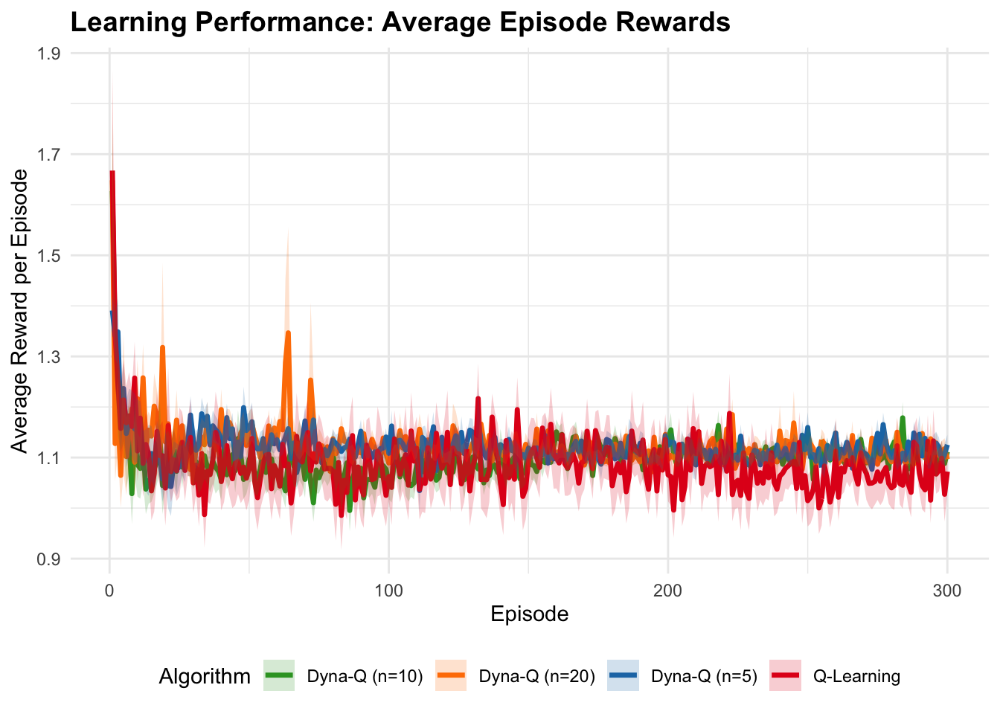

Chapter 5 On-Policy vs Off-Policy Reinforcement Learning: SARSA, Q-Learning, and Monte Carlo in R
5.1 Introduction
In model-free reinforcement learning (RL), agents learn optimal policies directly from experience without a model of the environment’s dynamics. Two key approaches are on-policy and off-policy methods, exemplified by SARSA (State-Action-Reward-State-Action) and Q-Learning, respectively. Additionally, off-policy Monte Carlo methods leverage importance sampling to learn optimal policies from exploratory data. This post explores these methods, focusing on their theoretical foundations, practical implications, and implementation in R. We use a 10-state, 2-action environment to compare how SARSA, Q-Learning, and off-policy Monte Carlo learn policies and adapt to environmental changes, such as outcome devaluation. Mathematical formulations and R code are provided to illustrate the concepts. SARSA, Q-Learning, and off-policy Monte Carlo aim to estimate the action-value function \(Q^\pi(s,a)\), the expected discounted return for taking action \(a\) in state \(s\) and following policy \(\pi\):
\[ Q^\pi(s,a) = \mathbb{E}_\pi \left[ \sum_{t=0}^\infty \gamma^t R_{t+1} \mid S_0 = s, A_0 = a \right] \]
where \(\gamma \in [0,1]\) is the discount factor, and \(R_{t+1}\) is the reward at time \(t+1\).
5.2 SARSA (On-Policy)
SARSA is an on-policy method, meaning it learns the value of the policy being followed, including exploration. The update rule is:
\[ Q(s,a) \leftarrow Q(s,a) + \alpha \left( r + \gamma Q(s', a') - Q(s,a) \right) \]
where \(\alpha\) is the learning rate, \(r\) is the reward, \(s'\) is the next state, and \(a'\) is the action actually taken in \(s'\) according to the current policy (e.g., \(\epsilon\)-greedy). SARSA updates \(Q\) based on the next state-action pair \((s', a')\), making it sensitive to the exploration policy. In the 10-state environment, SARSA learns a policy that accounts for exploratory actions, potentially avoiding risky moves that lead to lower rewards.
5.3 Q-Learning (Off-Policy)
Q-Learning is an off-policy method, meaning it learns the optimal policy \(\pi^*\) regardless of the exploration policy (e.g., \(\epsilon\)-greedy). The update rule is:
\[ Q(s,a) \leftarrow Q(s,a) + \alpha \left( r + \gamma \max_{a'} Q(s', a') - Q(s,a) \right) \]
where \(\max_{a'} Q(s', a')\) estimates the value of the next state assuming the optimal action. This bootstrapping makes Q-Learning converge to the optimal action-value function \(Q^*(s,a)\). In the 10-state environment, Q-Learning favors actions that maximize future rewards (e.g., action 1 in state 9, yielding a 1.0 reward at the terminal state), ignoring exploration effects.
5.4 Off-Policy Monte Carlo with Importance Sampling
Off-policy Monte Carlo uses importance sampling to learn the value of a target policy (e.g., greedy) from episodes generated by a behavior policy (e.g., random). The return \(G_t\) (cumulative discounted reward from time \(t\) onward) is weighted by the importance sampling ratio:
\[ \rho_t = \prod_{k=t}^T \frac{\pi(a_k|s_k)}{\mu(a_k|s_k)} \]
where \(\pi\) is the target policy, \(\mu\) is the behavior policy, and \(T\) is the episode length. The Q-value update is:
\[ Q(s,a) \leftarrow Q(s,a) + \alpha \left( \rho_t G_t - Q(s,a) \right) \]
Importance Sampling Mechanics: In the 10-state environment, suppose the behavior policy is random (0.5 probability for actions 1 and 2), but the target policy is greedy (choosing the action with the highest Q-value). If the agent in state 9 takes action 2 (reward 0.5 at the terminal state), but the greedy policy prefers action 1 (reward 1.0), the importance sampling ratio \(\rho_t\) is low (e.g., 0 if the greedy policy assigns zero probability to action 2), reducing the update’s impact. This allows learning the optimal policy from exploratory trajectories, but high variance can occur if the policies diverge significantly. Weighted importance sampling (as in the code below) normalizes weights to reduce variance, and early termination (stopping when \(\rho_t = 0\)) improves efficiency.
5.5 Key Differences
| Aspect | SARSA (On-Policy) | Q-Learning (Off-Policy) | Off-Policy Monte Carlo |
|---|---|---|---|
| Update Rule | Uses \(Q(s', a')\), where \(a'\) is sampled from the current policy. | Uses \(\max_{a'} Q(s', a')\), assuming the optimal action. | Uses \(\rho_t G_t\), where \(\rho_t\) reweights returns based on policy likelihoods. |
| Policy Learning | Learns the value of the policy being followed (including exploration). | Learns the optimal policy, independent of exploration. | Learns the optimal policy using importance sampling from exploratory trajectories. |
| Exploration Impact | Exploration affects learned Q-values. | Exploration does not affect learned Q-values. | Exploration affects returns, reweighted by importance sampling. |
| Convergence | Converges to the policy’s value if exploration decreases (e.g., \(\epsilon \to 0\)). | Converges to the optimal policy even with fixed exploration. | Converges to the optimal policy, but variance depends on policy similarity. |
| Behavior | More conservative, accounts for exploration risks. | More aggressive, assumes optimal future actions. | Aggressive, but variance can lead to unstable learning if policies differ significantly. |
# Common settings
n_states <- 10
n_actions <- 2
gamma <- 0.9
terminal_state <- n_states
# Environment: transition and reward models
set.seed(42)
transition_model <- array(0, dim = c(n_states, n_actions, n_states))
reward_model <- array(0, dim = c(n_states, n_actions, n_states))
for (s in 1:(n_states - 1)) {
transition_model[s, 1, s + 1] <- 0.9
transition_model[s, 1, sample(1:n_states, 1)] <- 0.1
transition_model[s, 2, sample(1:n_states, 1)] <- 0.8
transition_model[s, 2, sample(1:n_states, 1)] <- 0.2
for (s_prime in 1:n_states) {
reward_model[s, 1, s_prime] <- ifelse(s_prime == n_states, 1.0, 0.1 * runif(1))
reward_model[s, 2, s_prime] <- ifelse(s_prime == n_states, 0.5, 0.05 * runif(1))
}
}
transition_model[n_states, , ] <- 0
reward_model[n_states, , ] <- 0
# Helper function: Epsilon-greedy policy
epsilon_greedy <- function(Q, state, epsilon) {
if (runif(1) < epsilon) {
sample(1:n_actions, 1)
} else {
which.max(Q[state, ])
}
}
# Helper function: Simulate environment
simulate_step <- function(state, action) {
probs <- transition_model[state, action, ]
next_state <- sample(1:n_states, 1, prob = probs)
reward <- reward_model[state, action, next_state]
list(next_state = next_state, reward = reward)
}
# SARSA
sarsa <- function(n_episodes = 1000, alpha = 0.1, epsilon = 0.1) {
Q <- matrix(0, n_states, n_actions)
policy <- rep(0, n_states)
rewards <- numeric(n_episodes)
for (episode in 1:n_episodes) {
state <- sample(1:(n_states - 1), 1)
action <- epsilon_greedy(Q, state, epsilon)
episode_reward <- 0
while (state != terminal_state) {
step <- simulate_step(state, action)
next_state <- step$next_state
reward <- step$reward
next_action <- epsilon_greedy(Q, next_state, epsilon)
Q[state, action] <- Q[state, action] + alpha * (
reward + gamma * Q[next_state, next_action] - Q[state, action]
)
state <- next_state
action <- next_action
episode_reward <- episode_reward + reward
}
rewards[episode] <- episode_reward
}
policy[1:(n_states - 1)] <- apply(Q[1:(n_states - 1), ], 1, which.max)
list(Q = Q, policy = policy, rewards = rewards)
}This chunk sets up the simulated environment for the reinforcement learning agent. This environment is a Markov Decision Process (MDP).
Common Settings:
n_states <- 10: Defines a world with 10 possible states.n_actions <- 2: The agent can choose between 2 actions in any state.gamma <- 0.9: Sets the discount factor to 0.9. This means rewards received in the future are valued slightly less than immediate rewards.terminal_state <- n_states: State 10 is defined as the terminal state. Once the agent reaches this state, an episode ends.
Environment Models:
set.seed(42): This function ensures that any random numbers generated are the same every time the code is run, making the results reproducible.transition_modelandreward_model: These are 3D arrays that define the environment’s dynamics.transition_model[s, a, s']: Stores the probability of transitioning to states'after taking actionain states.reward_model[s, a, s']: Stores the reward received when transitioning from statestos'via actiona.
Populating the Models: The
forloop defines the rules of the environment for all non-terminal states.- For Action 1: There’s a 90% chance of moving to the next state sequentially (
s + 1) and a 10% chance of being sent to a random state. This is a relatively predictable action. - For Action 2: There’s an 80% chance of moving to one random state and a 20% chance of moving to another random state. This action is less predictable.
- Rewards: The agent gets a large positive reward (1.0 for Action 1, 0.5 for Action 2) for reaching the terminal state. All other transitions yield a small, random positive reward.
- For Action 1: There’s a 90% chance of moving to the next state sequentially (
Terminal State Logic: The final two lines ensure that if the agent is in the terminal state (
n_states), all transition probabilities and rewards are zero, effectively ending the episode.epsilon_greedy: This function implements the ε-greedy strategy, which balances exploration and exploitation.- Exploration: With a small probability
epsilon(ε), the agent ignores what it has learned and chooses a random action. This helps discover new, potentially better, strategies. - Exploitation: With probability
1 - epsilon, the agent chooses the action that it currently believes is the best, based on the highest action-value (Q) for the givenstate.which.max(Q[state, ])finds the index (action) of the maximum value in that state’s row.
- Exploration: With a small probability
simulate_step: This function simulates the agent taking a single step in the environment.- It takes the current
stateand chosenactionas input. - It looks up the transition probabilities for that state-action pair from the
transition_model. - It then samples a
next_statebased on those probabilities. - Finally, it retrieves the corresponding
rewardfrom thereward_modelfor that specific transition. - It returns the
next_stateandrewardas a list. This function implements the SARSA algorithm, which stands for State-Action-Reward-State-Action. It’s an on-policy temporal-difference learning algorithm.
- It takes the current
Initialization: It starts with a
Qmatrix (the action-value function) filled with zeros.Main Loop: The algorithm runs for a set number of
n_episodes.Inside an Episode:
- The agent starts in a random
state. - It chooses an
actionusing the ε-greedy policy. - The agent takes the action, and the environment returns a
rewardand anext_state. - Crucially for SARSA, it then chooses the
next_actionit will take from thenext_state, again using the ε-greedy policy. - The Q-value update is performed. It updates the value of the original state-action pair (
Q[state, action]) using the tuple \((S, A, R, S', A')\). The update rule is: \[ \]\[Q(S, A) \\leftarrow Q(S, A) + \\alpha [R + \\gamma Q(S', A') - Q(S, A)] \] $$$\(Here, `alpha` (\)$) is the learning rate. This update moves the current estimate ofQ[state, action]slightly towards the target valuereward + gamma * Q[next_state, next_action]. Because the update uses the Q-value of the action (next_action) that the current policy actually chooses, it is considered “on-policy.” - The agent moves to the next state (
state <- next_state), and the chosen next action becomes the current action (action <- next_action). The loop continues until the terminal state is reached.
- The agent starts in a random
Output: After all episodes, a final deterministic
policyis created by choosing the action with the highest Q-value for each state. The function returns the learnedQtable, the finalpolicy, and the history ofrewards.
# Q-Learning
q_learning <- function(n_episodes = 1000, alpha = 0.1, epsilon = 0.1) {
Q <- matrix(0, n_states, n_actions)
policy <- rep(0, n_states)
rewards <- numeric(n_episodes)
for (episode in 1:n_episodes) {
state <- sample(1:(n_states - 1), 1)
episode_reward <- 0
while (state != terminal_state) {
action <- epsilon_greedy(Q, state, epsilon)
step <- simulate_step(state, action)
next_state <- step$next_state
reward <- step$reward
Q[state, action] <- Q[state, action] + alpha * (
reward + gamma * max(Q[next_state, ]) - Q[state, action]
)
state <- next_state
episode_reward <- episode_reward + reward
}
rewards[episode] <- episode_reward
}
policy[1:(n_states - 1)] <- apply(Q[1:(n_states - 1), ], 1, which.max)
list(Q = Q, policy = policy, rewards = rewards)
}This function implements the Q-Learning algorithm. It is an off-policy temporal-difference learning algorithm. The structure is very similar to SARSA, with one critical difference.
- The Q-value Update: Unlike SARSA, Q-learning does not need to choose the next action (
A') to perform its update. Instead, it updates its Q-value based on the maximum possible Q-value in the next state. This represents the value of acting optimally (greedily) from the next state, regardless of what the ε-greedy policy might do. The update rule is: \[ \]\[Q(S, A) \\leftarrow Q(S, A) + \\alpha [R + \\gamma \\max\_{a'} Q(S', a') - Q(S, A)] \] $$$$The termmax(Q[next_state, ])finds the best possible future value fromnext_state. Because the agent learns about the optimal policy while following a different (ε-greedy) policy, it is considered “off-policy.”
# Off-Policy Monte Carlo
off_policy_mc <- function(n_episodes = 1000, epsilon = 0.1) {
Q <- matrix(0, n_states, n_actions)
C <- matrix(0, n_states, n_actions) # Cumulative weights
policy <- rep(0, n_states)
rewards <- numeric(n_episodes)
for (episode in 1:n_episodes) {
# Generate episode using behavior policy (epsilon-greedy)
states <- numeric(0)
actions <- numeric(0)
rewards_ep <- numeric(0)
state <- sample(1:(n_states - 1), 1)
while (state != terminal_state) {
action <- sample(1:n_actions, 1) # Behavior policy: random
step <- simulate_step(state, action)
next_state <- step$next_state
reward <- step$reward
states <- c(states, state)
actions <- c(actions, action)
rewards_ep <- c(rewards_ep, reward)
state <- next_state
}
rewards[episode] <- sum(rewards_ep)
# Update Q using importance sampling
G <- 0
W <- 1
for (t in length(states):1) {
state <- states[t]
action <- actions[t]
reward <- rewards_ep[t]
G <- gamma * G + reward
C[state, action] <- C[state, action] + W
Q[state, action] <- Q[state, action] + (W / C[state, action]) * (G - Q[state, action])
pi_action <- which.max(Q[state, ])
if (action != pi_action) break
W <- W / (1 / n_actions) # Importance sampling ratio
}
}
policy[1:(n_states - 1)] <- apply(Q[1:(n_states - 1), ], 1, which.max)
list(Q = Q, policy = policy, rewards = rewards)
}This function implements an Off-Policy Monte Carlo (MC) control method using importance sampling.
- Monte Carlo Method: Unlike SARSA and Q-Learning, MC methods do not update values after every step. Instead, they run a complete episode and then update the values of the state-action pairs visited during that episode based on the total observed return.
- Off-Policy Learning: The goal is to learn the optimal (greedy) policy, called the target policy. However, to ensure exploration, the agent generates episodes using a different behavior policy. In this code, the behavior policy is to choose actions completely at random.
- Episode Generation: The first
whileloop generates a complete episode using the random behavior policy and stores all the states, actions, and rewards. - Update with Importance Sampling: The second
forloop iterates backward through the episode’s steps.G: This is the return, or the cumulative discounted reward from time steptto the end of the episode.W: This is the importance sampling ratio. It corrects for the fact that we are learning about the target policy while observing actions from the behavior policy. It’s the ratio of the probabilities of a trajectory occurring under the two policies.QandCare updated using a weighted average formula.Caccumulates the weights to ensure a stable average.if (action != pi_action) break: This is a key step. The target policy is greedy. If at any step the action taken under the random policy is not the one the greedy policy would have chosen, the probability of the rest of the trajectory under the target policy becomes zero. The importance sampling ratioWwould become 0, so we can stop updating for this episode.
# Value Iteration (from DP)
value_iteration <- function(transition_model, reward_model, gamma, epsilon = 1e-6, max_iter = 1000) {
V <- rep(0, n_states)
policy <- rep(0, n_states)
delta <- Inf
iter <- 0
while (delta > epsilon && iter < max_iter) {
delta <- 0
V_old <- V
for (s in 1:(n_states - 1)) {
Q <- numeric(n_actions)
for (a in 1:n_actions) {
Q[a] <- sum(transition_model[s, a, ] * (reward_model[s, a, ] + gamma * V))
}
V[s] <- max(Q)
policy[s] <- which.max(Q)
delta <- max(delta, abs(V[s] - V_old[s]))
}
iter <- iter + 1
}
# Evaluate DP policy
rewards <- numeric(1000)
for (episode in 1:1000) {
state <- sample(1:(n_states - 1), 1)
episode_reward <- 0
while (state != terminal_state) {
action <- policy[state]
step <- simulate_step(state, action)
episode_reward <- episode_reward + step$reward
state <- step$next_state
}
rewards[episode] <- episode_reward
}
list(V = V, policy = policy, rewards = rewards)
}This function implements Value Iteration, a classic Dynamic Programming (DP) algorithm.
- Model-Based: Unlike the previous methods, DP is model-based, meaning it requires full knowledge of the environment’s dynamics (the
transition_modelandreward_model). It doesn’t learn from interaction but calculates the optimal policy directly from the model. - State-Value Function (
V): Value Iteration computes the optimal state-value function,V(s), which is the expected return starting from statesand following the optimal policy thereafter. - Main Loop: The algorithm repeatedly sweeps through all states.
- In each sweep, it updates the value of each state
susing the Bellman optimality equation: \[ \]\[V\_{k+1}(s) \\leftarrow \\max\_a \\sum\_{s'} P(s'|s, a) [R(s,a,s') + \\gamma V\_k(s')] \] $$$$The code calculates the Q-value for each action (Q[a] <- sum(...)) and then takes the maximum of these to updateV[s]. - The loop continues until the value function converges, meaning the maximum change (
delta) in any state’s value between iterations is smaller than a tiny thresholdepsilon.
- In each sweep, it updates the value of each state
- Policy Extraction: Once the optimal value function
Vis found, the optimalpolicyis extracted by choosing the action that maximizes the expected return from each state. - Evaluation: Since DP doesn’t generate reward data during learning, a separate loop is run at the end to evaluate the performance of the found policy for fair comparison with the other algorithms.
# Run algorithms
set.seed(42)
dp_result <- value_iteration(transition_model, reward_model, gamma)
sarsa_result <- sarsa(n_episodes = 1000, alpha = 0.1, epsilon = 0.1)
qlearn_result <- q_learning(n_episodes = 1000, alpha = 0.1, epsilon = 0.1)
mc_result <- off_policy_mc(n_episodes = 1000, epsilon = 0.1)
# Visualization
library(ggplot2)## RStudio Community is a great place to get help: https://community.rstudio.com/c/tidyverselibrary(gridExtra)
# Policy comparison
policy_df <- data.frame(
State = rep(1:n_states, 4),
Policy = c(dp_result$policy, sarsa_result$policy, qlearn_result$policy, mc_result$policy),
Algorithm = rep(c("DP", "SARSA", "Q-Learning", "Off-Policy MC"), each = n_states)
)
policy_df$Policy[n_states * 0:3 + n_states] <- NA # Terminal state
policy_plot <- ggplot(policy_df, aes(x = State, y = Policy, color = Algorithm)) +
geom_point(size = 3) +
geom_line(aes(group = Algorithm), na.rm = TRUE) +
theme_minimal() +
labs(title = "Optimal Policies by Algorithm", x = "State", y = "Action") +
scale_x_continuous(breaks = 1:n_states) +
scale_y_continuous(breaks = 1:n_actions, labels = c("Action 1", "Action 2")) +
theme(legend.position = "bottom")
# Reward comparison
reward_df <- data.frame(
Episode = rep(1:1000, 4),
Reward = c(
cumsum(dp_result$rewards),
cumsum(sarsa_result$rewards),
cumsum(qlearn_result$rewards),
cumsum(mc_result$rewards)
),
Algorithm = rep(c("DP", "SARSA", "Q-Learning", "Off-Policy MC"), each = 1000)
)
reward_plot <- ggplot(reward_df, aes(x = Episode, y = Reward, color = Algorithm)) +
geom_line() +
theme_minimal() +
labs(title = "Cumulative Reward Comparison", x = "Episode", y = "Cumulative Reward") +
theme(legend.position = "bottom")
# Display plots
grid.arrange(policy_plot, reward_plot, ncol = 1)## Warning: Removed 4 rows containing missing values or values outside the scale range (`geom_point()`).
## Average Cumulative Reward per Episode:## DP: 1.084506## SARSA: 1.147303## Q-Learning: 0.9781511## Off-Policy MC: 1.081865This final chunk executes all the defined algorithms and visualizes their results for comparison.
- Execution: Each of the four algorithms is run with specified parameters, and their results (policies, rewards, etc.) are stored.
set.seed(42)is used again to ensure consistent starting conditions for all methods. - Policy Comparison Plot:
- A data frame is created to hold the final policies from all algorithms.
ggplot2is used to create a plot that shows the action chosen by each algorithm for each state. This allows for a direct visual comparison of how the learned strategies differ.
- Reward Comparison Plot:
- A second data frame is created to track the cumulative reward over the training episodes.
cumsumcalculates the running total of rewards, which is a good indicator of learning performance over time. - A line plot shows how the cumulative reward for each algorithm increases with each episode. A steeper slope indicates faster and more effective learning.
- A second data frame is created to track the cumulative reward over the training episodes.
- Display and Metrics:
grid.arrangefrom thegridExtrapackage combines the two plots into a single output.- Finally, the average reward per episode is calculated and printed for each algorithm, providing a simple, quantitative summary of their overall performance.
5.6 Interpretation and Discussion
5.6.0.1 Policy Differences
- SARSA: As an on-policy method, it learns the value of the \(\epsilon\)-greedy policy, which includes exploratory actions. In the 10-state environment, SARSA may balance between actions 1 and 2, reflecting the impact of random exploration, leading to a more conservative policy.
- Q-Learning: As an off-policy method, it learns the optimal policy, favoring action 1 in state 9 (higher terminal reward of 1.0) due to its greedy updates. Its policy is less sensitive to exploration noise, as it assumes optimal future actions.
- Off-Policy Monte Carlo: Also off-policy, it learns the optimal policy using importance sampling to reweight returns from a random behavior policy. It may align closely with Q-Learning’s policy but can exhibit variability due to high variance in importance sampling ratios, especially if the random policy frequently selects action 2 (lower reward).
5.6.0.2 Devaluation
All methods exhibit habitual behavior without retraining, retaining their original policies after the terminal reward is removed. This highlights a limitation of model-free methods compared to model-based approaches (e.g., dynamic programming), which adapt instantly to reward changes.
5.6.0.3 Practical Implications
- SARSA: Better suited for environments where the exploration policy must be accounted for, such as safety-critical systems (e.g., robotics), where risky exploratory actions could lead to poor outcomes.
- Q-Learning: Ideal for scenarios where the optimal policy is desired regardless of exploration, such as games or simulations where exploration does not incur real-world costs.
- Off-Policy Monte Carlo: Suitable for offline learning from logged data (e.g., recommendation systems), but high variance can make it less stable than Q-Learning in dynamic environments.
5.6.0.4 Experimental Observations
- Before devaluation, Q-Learning and off-policy Monte Carlo likely favor action 1 in state 9 due to its higher terminal reward, while SARSA’s policy may show more variability due to exploration.
- After devaluation, all policies remain unchanged without retraining, illustrating their reliance on cached Q-values.
- Off-policy Monte Carlo’s performance depends on the similarity between the random behavior policy and the greedy target policy, with high variance potentially leading to less consistent policies compared to Q-Learning.
5.7 Conclusion
SARSA, Q-Learning, and off-policy Monte Carlo represent distinct paradigms in model-free RL. SARSA’s on-policy updates reflect the exploration policy, making it conservative. Q-Learning’s off-policy updates target the optimal policy, ignoring exploration effects. Off-policy Monte Carlo uses importance sampling to learn from diverse trajectories, enabling offline learning but introducing variance. The R implementations demonstrate these differences in a 10-state environment, and the devaluation experiment underscores their habitual nature. Future posts could explore advanced topics, such as SARSA(\(\lambda\)), deep RL extensions, or variance reduction in off-policy Monte Carlo.
5.8 Comparison Table
| Aspect | SARSA (On-Policy) | Q-Learning (Off-Policy) | Off-Policy Monte Carlo |
|---|---|---|---|
| Learning Approach | Learns incrementally, updates based on action taken by behavior policy. | Learns incrementally, updates based on best action in next state. | Learns from complete episodes, using importance sampling. |
| Update Rule | \(Q(s,a) \leftarrow Q(s,a) + \alpha \left( r + \gamma Q(s', a') - Q(s,a) \right)\) | \(Q(s,a) \leftarrow Q(s,a) + \alpha \left( r + \gamma \max_{a'} Q(s', a') - Q(s,a) \right)\) | \(Q(s,a) \leftarrow Q(s,a) + \alpha \left( \rho_t G_t - Q(s,a) \right)\) |
| Episode Requirement | Updates online, no episode completion needed. | Updates online, no episode completion needed. | Requires complete episodes for returns and importance weights. |
| Bias and Variance | Biased due to bootstrapping, moderate variance. | Biased due to bootstrapping, lower variance. | Unbiased but high variance due to importance sampling. |
| Policy Type | On-policy; learns value of behavior policy. | Off-policy; learns optimal policy via max Q-value. | Off-policy; learns greedy policy using importance sampling. |
| Exploration Impact | Exploration affects learned Q-values. | Exploration does not affect learned Q-values. | Exploration affects returns, reweighted by importance sampling. |
| Convergence | Converges to policy’s value if \(\epsilon \to 0\). | Converges to optimal policy even with fixed \(\epsilon\). | Converges to optimal policy, but variance depends on policy similarity. |
| Behavior | Conservative, accounts for exploration risks. | Aggressive, assumes optimal future actions. | Aggressive, but variance can lead to instability. |
| Example in Environment | Balances actions 1 and 2, sensitive to exploration. | Favors action 1 (higher reward) in state 9. | Favors action 1, but variance may cause variability. |